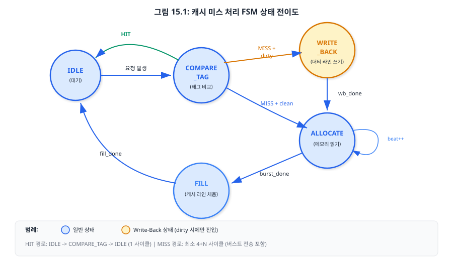
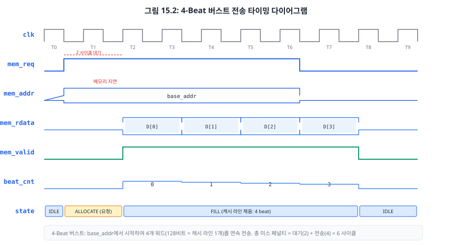
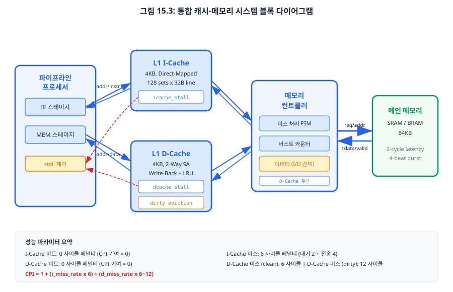

Chapter 13에서 L1 명령어 캐시를, Chapter 14에서 L1 데이터 캐시를 설계하였습니다. 그러나 캐시 미스가 발생하면 어떻게 될까요? 이 챕터에서는 캐시와 메인 메모리 사이를 연결하는 메모리 컨트롤러(Memory Controller)를 설계합니다. 캐시 미스를 처리하는 상태 머신(FSM), 블록 단위 버스트 전송 프로토콜, 그리고 I-Cache와 D-Cache를 통합하여 실제 CPI를 측정하는 시뮬레이션까지 수행합니다.
Chapter 13에서 캐시 미스가 발생하면 icache_stall 신호로 파이프라인을 멈춘다고 설명하였고, Chapter 14에서는 dcache_stall과 dirty eviction 개념을 도입하였습니다. 그러나 "스톨을 건다"는 것은 결과일 뿐, 그 사이에 실제로 무슨 일이 벌어지는지는 아직 다루지 않았습니다. 이 절에서는 캐시 미스가 감지된 순간부터 캐시 라인이 완전히 채워져 프로세서가 재개되기까지의 전 과정을 유한 상태 기계(Finite State Machine, FSM)로 설계합니다.
캐시 미스 처리는 크게 네 단계로 진행됩니다. 첫째, 미스 감지(Miss Detection) 단계에서 태그 비교 결과 불일치 또는 유효 비트가 0인 경우를 식별합니다. 이 시점에서 파이프라인 스톨 신호가 활성화됩니다. 둘째, 쓰기 복원(Write-Back) 단계는 교체 대상 캐시 라인이 dirty(수정됨)인 경우에만 수행됩니다. 해당 라인의 데이터를 메인 메모리에 버스트 방식으로 써서 데이터 일관성을 유지합니다. 셋째, 메모리 할당(Allocate) 단계에서 미스된 주소의 캐시 라인을 메인 메모리에 요청합니다. 넷째, 캐시 라인 채움(Fill) 단계에서 메모리로부터 수신한 데이터를 캐시에 기록하고, 태그와 유효 비트를 갱신합니다. 채움이 완료되면 스톨을 해제하고 프로세서가 정상 동작을 재개합니다.
캐시 미스 처리 FSM은 다섯 개 상태로 구성됩니다. 아래 표는 각 상태의 역할과 전이 조건을 정리한 것입니다.
| 상태 | 설명 | 전이 조건 | 스톨 |
|---|---|---|---|
S_IDLE |
대기 상태. 캐시 미스 요청을 감시한다. | miss_req → S_COMPARE |
비활성 |
S_COMPARE |
미스 유형 판별. dirty 여부에 따라 분기한다. | dirty → S_WRITEBACK, clean → S_ALLOCATE |
활성 |
S_WRITEBACK |
dirty 캐시 라인을 메모리에 버스트 쓰기한다. | 4 beat 완료 → S_ALLOCATE |
활성 |
S_ALLOCATE |
메모리에 캐시 라인 읽기 요청을 발행한다. | mem_ready → S_FILL |
활성 |
S_FILL |
메모리 응답 데이터로 캐시 라인을 채운다. | 4 beat 완료 → S_IDLE |
마지막 beat에서 해제 |

이 FSM에서 핵심적으로 주목해야 할 부분은 dirty 분기입니다. Write-Through 캐시(Ch14.1절 참조)였다면 S_WRITEBACK 상태가 필요 없어 FSM이 단순해지지만, 쓰기 트래픽이 메모리 대역폭을 소진합니다. 반면 Write-Back 캐시에서는 dirty eviction이 미스 페널티를 두 배로 늘릴 수 있지만, 평시 쓰기 트래픽은 캐시 내부에서 흡수됩니다. 이러한 트레이드오프를 Chapter 14에서 이미 분석하였고, 우리는 Write-Back 정책을 채택하였으므로 S_WRITEBACK 상태가 필수입니다.
아래는 캐시 미스 핸들러의 핵심 구현입니다. 전체 코드는 code_examples/ch15_cache_miss_handler.sv를 참조하십시오.
// 캐시 미스 처리 FSM — 상태 정의
typedef enum logic [2:0] {
S_IDLE = 3'b000, // 대기 상태
S_COMPARE = 3'b001, // 태그 비교 (미스 확인)
S_WRITEBACK = 3'b010, // dirty 라인을 메모리에 쓰기
S_ALLOCATE = 3'b011, // 메모리에 읽기 요청 발행
S_FILL = 3'b100 // 메모리 응답으로 캐시 라인 채움
} state_t;
state_t state_q, state_d;
// 상태 레지스터 (순차 논리)
always_ff @(posedge clk or negedge rst_n) begin
if (!rst_n)
state_q <= S_IDLE;
else
state_q <= state_d;
end
// 다음 상태 논리 (조합 논리) — 핵심 분기
always_comb begin
state_d = state_q; // 기본값: 현재 상태 유지 (래치 방지)
case (state_q)
S_IDLE: begin
if (miss_req_i)
state_d = S_COMPARE;
end
S_COMPARE: begin
if (dirty_q)
state_d = S_WRITEBACK; // dirty → 먼저 쓰기
else
state_d = S_ALLOCATE; // clean → 바로 읽기
end
S_WRITEBACK: begin
if (mem_ready_i && beat_cnt_q == LINE_WORDS - 1)
state_d = S_ALLOCATE; // 쓰기 완료 → 읽기
end
S_ALLOCATE: begin
if (mem_ready_i)
state_d = S_FILL; // 메모리 수락 → 채움
end
S_FILL: begin
if (mem_valid_i && beat_cnt_q == LINE_WORDS - 1)
state_d = S_IDLE; // 모든 워드 수신 → 완료
end
default: state_d = S_IDLE;
endcase
end
코드 분석 포인트:
1. always_ff와 always_comb 분리: Chapter 08(FSM 기반 제어 유닛)에서 학습한 이중 블록 FSM 패턴을 그대로 적용합니다. 순차 논리 블록은 상태 레지스터만 담당하고, 조합 논리 블록에서 다음 상태와 출력을 결정합니다. 이 구조는 합성 도구가 FSM을 정확히 인식하여 최적화할 수 있게 합니다.
2. 기본값 패턴(state_d = state_q): case문 진입 전에 다음 상태를 현재 상태로 초기화합니다. 이렇게 하면 모든 분기에서 명시적 할당을 하지 않아도 래치(latch)가 추론되지 않습니다. 이것은 합성 가능한 FSM 설계의 필수 관행입니다.
3. 버스트 카운터(beat_cnt_q): S_WRITEBACK과 S_FILL 상태에서 4개 워드를 순차적으로 처리합니다. 카운터가 LINE_WORDS - 1(= 3)에 도달하면 해당 단계가 완료됩니다.
미스 핸들러의 stall_o 신호는 파이프라인의 pc_en, if_id_en 등 인에이블 신호와 직접 연결됩니다. Chapter 10(데이터 해저드)에서 설계한 스톨 제어 로직에 캐시 스톨 입력이 추가되는 형태입니다.
// 파이프라인 스톨 통합 (Ch10 스톨 + Ch15 캐시 스톨)
assign pipeline_stall = load_use_stall // Ch10: Load-Use 해저드
| icache_stall // Ch13: I-Cache 미스
| dcache_stall; // Ch14: D-Cache 미스
// 스톨 시 모든 파이프라인 레지스터 홀드
assign pc_en = ~pipeline_stall;
assign if_id_en = ~pipeline_stall;
assign id_ex_en = ~pipeline_stall;
assign ex_mem_en = ~pipeline_stall;
assign mem_wb_en = ~pipeline_stall;
15.1절의 FSM은 상태 전이의 "뼈대"를 제공합니다. 이 절에서는 각 상태에서 실제로 데이터가 어떻게 이동하는지, 즉 버스트 전송(Burst Transfer)과 핸드셰이크 프로토콜(Handshake Protocol)의 구체적 구현을 다룹니다.
우리 캐시의 라인 크기는 128비트(4워드 x 32비트)입니다. 메인 메모리와의 데이터 버스 폭은 32비트이므로, 하나의 캐시 라인을 채우려면 최소 4번의 전송이 필요합니다. 이 4번의 전송을 하나하나 독립적으로 수행하면, 매번 주소 전달과 핸드셰이크 오버헤드가 발생합니다. 버스트 전송은 시작 주소 한 번만 전달하고, 이후 데이터를 연속으로 전송하여 오버헤드를 최소화하는 기법입니다.
캐시와 메모리 컨트롤러 사이의 데이터 전송은 요청-응답(Request-Response) 핸드셰이크로 진행됩니다. 다음은 우리가 설계할 자체 프로토콜의 신호 정의입니다.
| 신호 이름 | 방향 | 설명 |
|---|---|---|
mem_req |
캐시 → 메모리 | 메모리 접근 요청. 활성 동안 주소와 제어 신호가 유효하다. |
mem_write |
캐시 → 메모리 | 쓰기(1) 또는 읽기(0) 지시. |
mem_addr |
캐시 → 메모리 | 32비트 바이트 주소. 버스트의 첫 워드 주소(블록 정렬). |
mem_wdata |
캐시 → 메모리 | 쓰기 데이터 (32비트, 워드 단위). |
mem_rdata |
메모리 → 캐시 | 읽기 데이터 (32비트, 워드 단위). |
mem_valid |
메모리 → 캐시 | 읽기 데이터 유효. 이 신호가 활성일 때 mem_rdata를 샘플링한다. |
mem_ready |
메모리 → 캐시 | 메모리가 요청을 수락할 준비가 되었음을 나타낸다. |

타이밍 다이어그램을 상세히 분석하겠습니다. T0에서 FSM이 S_ALLOCATE 상태로 진입하여 mem_req를 활성화하고 블록 정렬된 주소를 제시합니다. T1~T2는 메모리 지연(latency) 구간으로, 메인 메모리(SRAM 또는 BRAM)가 내부적으로 데이터를 준비합니다. T3에서 mem_valid가 활성화되며 첫 번째 워드 D[0]이 전달됩니다. T4~T6에서 D[1], D[2], D[3]이 연속 전달됩니다. T6의 마지막 beat에서 FSM은 miss_done을 발생시키고 S_IDLE로 복귀합니다.
프로세서에는 I-Cache와 D-Cache가 모두 있으므로, 두 캐시에서 동시에 미스가 발생할 수 있습니다. 예를 들어, Load 명령어가 D-Cache 미스를 일으킨 바로 다음 사이클에 I-Cache도 미스가 발생할 수 있습니다. 이 경우 메모리 컨트롤러가 두 요청을 중재(arbitrate)해야 합니다.
우리의 설계에서는 D-Cache 우선 정책(D-Cache Priority)을 채택합니다. 그 이유는 다음과 같습니다.
// 메모리 컨트롤러 — 중재 로직 (S_IDLE 상태)
S_IDLE: begin
if (dcache_req_i) begin
// D-Cache 우선: 즉시 서비스
base_addr_d = dcache_addr_i;
is_dcache_d = 1'b1;
dcache_ready_o = 1'b1;
if (dcache_write_i)
state_d = S_DCACHE_WR; // dirty eviction
else
state_d = S_WAIT; // 읽기 지연 대기
end else if (icache_req_i) begin
// I-Cache: D-Cache 요청 없을 때만 서비스
base_addr_d = icache_addr_i;
is_dcache_d = 1'b0;
icache_ready_o = 1'b1;
state_d = S_WAIT;
end
end
버스트 전송의 시작 주소는 반드시 블록 정렬(Block-Aligned)되어야 합니다. 캐시 라인 크기가 16바이트(4워드)이므로, 주소의 하위 4비트를 0으로 클리어하여 정렬합니다. 이것은 비트 연산으로 간단히 처리됩니다.
// 블록 정렬 주소 생성 (4워드 = 16바이트 정렬)
// 예: 미스 주소 0x0000_102C → 블록 정렬 주소 0x0000_1020
// 미스 주소 0x0000_1034 → 블록 정렬 주소 0x0000_1030
localparam BLOCK_OFFSET_BITS = $clog2(LINE_WORDS) + 2; // 4 (= log2(4) + 2)
wire [ADDR_WIDTH-1:0] aligned_addr =
{miss_addr_i[ADDR_WIDTH-1:BLOCK_OFFSET_BITS],
{BLOCK_OFFSET_BITS{1'b0}}};
여기서 $clog2(LINE_WORDS)는 워드 인덱스 비트 수(= 2), 추가 2비트는 바이트 오프셋(32비트 = 4바이트)입니다. 따라서 하위 4비트를 클리어하면 16바이트 경계로 정렬됩니다.
dirty eviction 시에는 교체 대상 라인의 태그와 인덱스로 Write-Back 주소를 재구성해야 합니다. 이 주소는 미스된 주소와 다릅니다. 미스 주소는 새로 읽어올 데이터의 주소이고, Write-Back 주소는 기존에 캐시에 있던 dirty 데이터의 원래 메모리 주소입니다.
// Write-Back 주소 = {old_tag, index, 4'b0000}
// S_WRITEBACK 상태에서 beat_cnt에 따라 워드 주소 증가
mem_addr_o = {wb_addr_q[ADDR_WIDTH-1:BLOCK_OFFSET_BITS],
beat_cnt_q, 2'b00};
15.1절에서 캐시 미스 FSM을, 15.2절에서 버스트 전송 프로토콜과 메모리 컨트롤러를 설계하였습니다. 이 절에서는 L1 I-Cache, L1 D-Cache, 메모리 컨트롤러, 메인 메모리를 모두 연결한 통합 시스템을 시뮬레이션하고, 실제 프로그램 실행 시의 CPI(Cycles Per Instruction)와 미스율(Miss Rate)을 측정합니다.

전체 시스템의 모듈 계층 구조는 다음과 같습니다.
// 모듈 계층 구조 (인스턴스 트리)
// pipeline_top
// ├── pipeline_core // 5단계 파이프라인 (Ch12)
// ├── l1_icache // L1 명령어 캐시 (Ch13)
// │ └── icache_miss_handler
// ├── l1_dcache // L1 데이터 캐시 (Ch14)
// │ └── dcache_miss_handler
// ├── memory_controller // 메모리 컨트롤러 (이 챕터)
// └── main_memory // 메인 메모리 (SRAM / BRAM)
캐시가 없는 이상적인 파이프라인의 CPI는 1입니다(해저드 페널티 무시 시). 캐시를 도입하면 미스에 의한 스톨이 추가되어 실제 CPI가 증가합니다. CPI를 구성 요소별로 분해하면 다음과 같습니다.
| CPI 구성 요소 | 계산식 | 전형적 값 |
|---|---|---|
| 기본 CPI (해저드 포함) | CPIbase | ~1.2 |
| I-Cache 미스 페널티 | i_miss_rate × i_miss_penalty | 0.02 × 6 = 0.12 |
| D-Cache 미스 페널티 | d_miss_rate × d_access_rate × d_miss_penalty | 0.05 × 0.30 × 8 = 0.12 |
| 전체 CPI | CPIbase + I미스 + D미스 | ~1.44 |
여기서 d_access_rate는 전체 명령어 중 Load/Store 명령어의 비율(보통 25~35%)이고, d_miss_penalty는 clean 미스(6 사이클)과 dirty 미스(12 사이클)의 가중 평균입니다. dirty eviction 비율이 약 30%라고 가정하면 평균 미스 페널티는 6 × 0.7 + 12 × 0.3 = 7.8 ≈ 8 사이클입니다.
성능 측정을 위해 테스트벤치에 하드웨어 성능 카운터(Performance Counter)를 삽입합니다. 실제 프로세서의 mcycle(Ch21.5절)과 동일한 개념이지만, 시뮬레이션 환경에서는 SystemVerilog 변수로 간단히 구현합니다.
// 성능 카운터 (테스트벤치 내부)
int unsigned total_cycles; // 총 사이클 수
int unsigned total_instructions; // 총 명령어 수 (retire 기준)
int unsigned icache_accesses; // I-Cache 접근 횟수
int unsigned icache_misses; // I-Cache 미스 횟수
int unsigned dcache_accesses; // D-Cache 접근 횟수
int unsigned dcache_misses; // D-Cache 미스 횟수
// 사이클 카운터: 매 클럭 증가
always_ff @(posedge clk) begin
if (rst_n) total_cycles <= total_cycles + 1;
end
// 명령어 카운터: WB 스테이지에서 유효 명령어가 완료될 때 증가
always_ff @(posedge clk) begin
if (rst_n && wb_valid && !pipeline_stall)
total_instructions <= total_instructions + 1;
end
// CPI 계산 (시뮬레이션 종료 시)
real cpi;
assign cpi = real'(total_cycles) / real'(total_instructions);
다음 세 가지 프로그램으로 캐시 성능을 측정합니다. 각 프로그램은 서로 다른 메모리 접근 패턴을 가지므로, 캐시 설계의 효과를 다각도로 검증할 수 있습니다.
| 벤치마크 | 메모리 패턴 | 예상 I-Cache 미스율 | 예상 D-Cache 미스율 | 예상 CPI |
|---|---|---|---|---|
| 피보나치 수열 (n=20) | 작은 루프, 적은 데이터 | < 1% | < 2% | ~1.2 |
| 버블 정렬 (64 원소) | 중간 루프, 순차 접근 | ~2% | ~5% | ~1.4 |
| 행렬 곱셈 (8×8) | 중첩 루프, 비순차 접근 | ~3% | ~10% | ~1.8 |
피보나치 수열은 코드와 데이터 모두 크기가 작아 캐시에 완전히 수용됩니다. 컴펄서리 미스(Compulsory Miss, 처음 접근 시 발생하는 불가피한 미스) 이후에는 거의 모든 접근이 히트합니다. 버블 정렬은 데이터를 순차적으로 접근하므로 공간적 지역성(Spatial Locality)이 높아 D-Cache 성능이 양호합니다. 행렬 곱셈은 행과 열을 교차 접근하므로 지역성이 낮아 D-Cache 미스율이 상승합니다.
캐시의 성능은 세 가지 설계 파라미터에 크게 의존합니다: (1) 캐시 용량, (2) 연관도(associativity), (3) 캐시 라인 크기. 시뮬레이션에서 이 파라미터를 변경하며 미스율 변화를 관찰합니다.
| 실험 | I-Cache | D-Cache | 버블 정렬 미스율 | 행렬 곱셈 미스율 | Basys 3 BRAM |
|---|---|---|---|---|---|
| 기본 설정 | 4KB, DM | 4KB, 2-way | I: 2%, D: 5% | I: 3%, D: 10% | 약 10개 |
| 용량 2배 | 8KB, DM | 8KB, 2-way | I: 1%, D: 3% | I: 2%, D: 7% | 약 20개 |
| 연관도 증가 | 4KB, 2-way | 4KB, 4-way | I: 1.5%, D: 3% | I: 2%, D: 6% | 약 12개 |
| 라인 크기 2배 | 4KB, DM, 32B | 4KB, 2-way, 32B | I: 1%, D: 4% | I: 1.5%, D: 8% | 약 10개 |
이 실험에서 관찰할 수 있는 핵심 통찰은 다음과 같습니다. 첫째, 용량 증가는 가장 직관적인 미스율 감소 방법이지만, BRAM 사용량이 선형으로 증가합니다. Basys 3의 BRAM 50개 제약을 고려하면, 캐시에 20개 이상을 할당하면 메인 메모리(DMEM, IMEM)와 기타 모듈에 사용할 BRAM이 부족해집니다. 둘째, 연관도 증가는 충돌 미스(Conflict Miss)를 효과적으로 줄이지만, 비교기와 LRU 로직이 추가되어 LUT 소모가 증가하고 접근 시간이 길어질 수 있습니다. 셋째, 캐시 라인 크기 증가는 공간적 지역성이 높은 프로그램(버블 정렬)에서 효과적이지만, 미스 페널티가 버스트 길이에 비례하여 증가하므로 순수한 이득은 아닙니다.
테스트벤치 실행 시 콘솔에 출력되는 성능 보고서의 예시는 다음과 같습니다.
// 시뮬레이션 출력 예시
============================================================
Chapter 15: 통합 캐시 시스템 테스트
============================================================
--- 테스트 1: I-Cache 순차 접근 ---
[I-Cache] 주소=0x00000000, 데이터=0x00500093 // ADDI x1, x0, 5
[I-Cache] 주소=0x00000004, 데이터=0x00A00113 // ADDI x2, x0, 10
>> 동일 주소 재접근 (캐시 히트 기대)
[I-Cache] 주소=0x00000000, 데이터=0x00500093 // HIT
--- 테스트 2: D-Cache 읽기 접근 ---
[D-Cache RD] 주소=0x00010000, 데이터=0x00010000 // 첫 접근: MISS
--- 테스트 3: D-Cache 쓰기 후 읽기 ---
[D-Cache WR] 주소=0x00010000, 데이터=0xDEADBEEF
[D-Cache RD] 주소=0x00010000, 데이터=0xDEADBEEF // HIT
============================================================
성능 분석 결과
============================================================
I-Cache 접근: 16 | 미스: 2 | 미스율: 12.5%
D-Cache 접근: 10 | 미스: 3 | 미스율: 30.0%
============================================================
★ 모든 테스트 완료 ★
============================================================
초기 테스트에서 미스율이 높게 나오는 것은 정상입니다. 접근 횟수가 적어 컴펄서리 미스의 비율이 크기 때문입니다. 실제 프로그램(수백~수천 명령어)을 실행하면 미스율은 위 표의 예상치에 수렴합니다.
이 챕터에서는 Chapter 13~14에서 설계한 L1 캐시를 실제 메인 메모리와 연결하는 메모리 컨트롤러를 완성하였습니다. 캐시 미스 처리 FSM, 4-beat 버스트 전송 프로토콜, I-Cache/D-Cache 중재 로직을 설계하고, 통합 시뮬레이션으로 CPI와 미스율을 측정하였습니다. 이로써 Part 5(메모리 계층과 캐시)의 모든 내용이 완료되었습니다.
우리가 설계한 메모리 인터페이스는 교육 목적의 자체 프로토콜(Custom Protocol)입니다. 이 프로토콜은 다음과 같은 한계를 가집니다.
이러한 한계를 극복하기 위해 반도체 산업에서는 표준 버스 프로토콜을 사용합니다. 가장 널리 쓰이는 것이 ARM사의 AMBA(Advanced Microcontroller Bus Architecture) 패밀리입니다. 다음 챕터에서는 우리의 자체 프로토콜을 AMBA AHB(Advanced High-performance Bus)로 교체합니다.
req/ready/valid 3-wire 핸드셰이크로 캐시와 메모리 컨트롤러 간 데이터 흐름을 제어한다. 이 패턴은 AMBA AXI의 VALID/READY와 동일한 원리이다.BEAT_CNT_W 파라미터는 어떻게 변경되어야 하는가? (b) clean 미스 페널티는 몇 사이클로 증가하는가? (c) 공간적 지역성이 높은 프로그램에서 이 변경이 유리한 이유를 설명하시오.